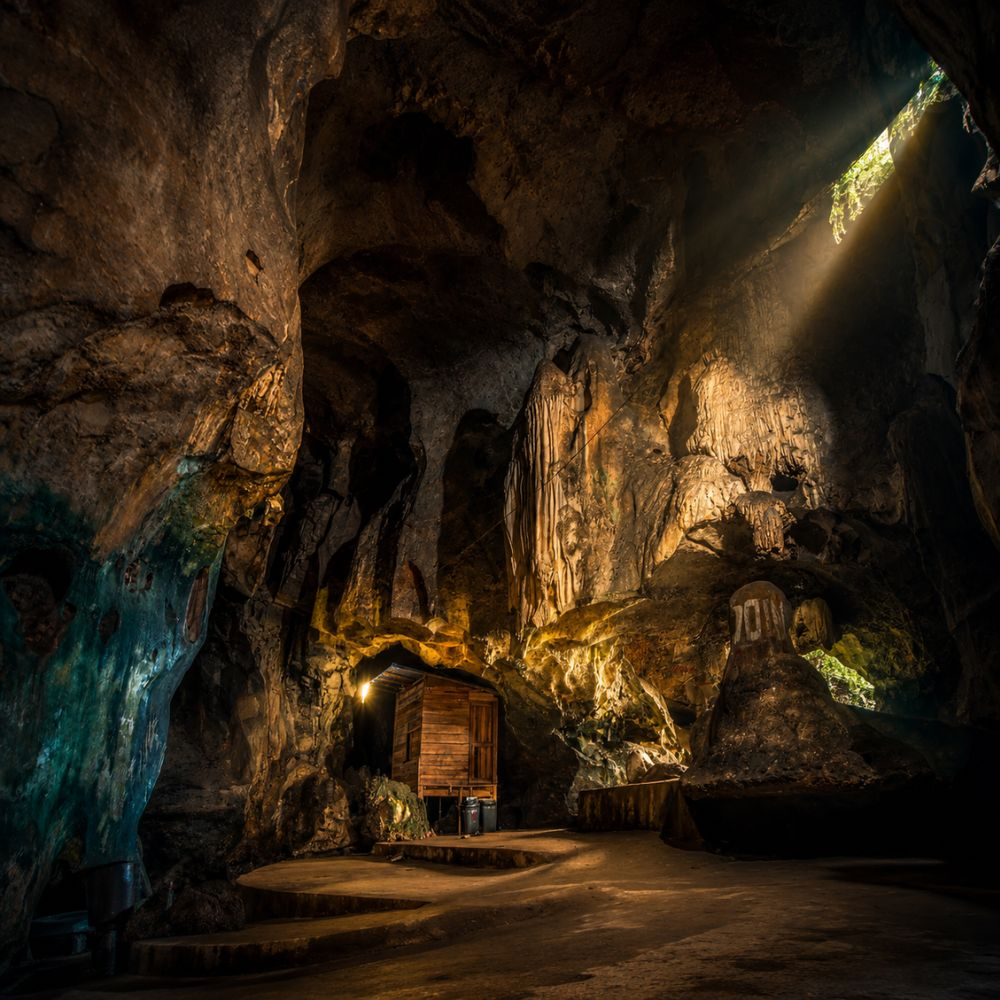
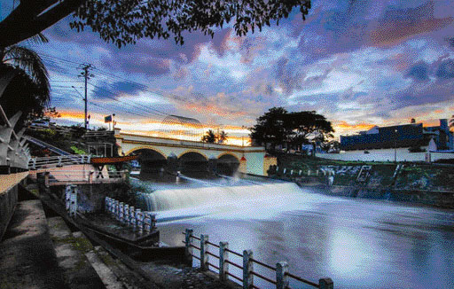
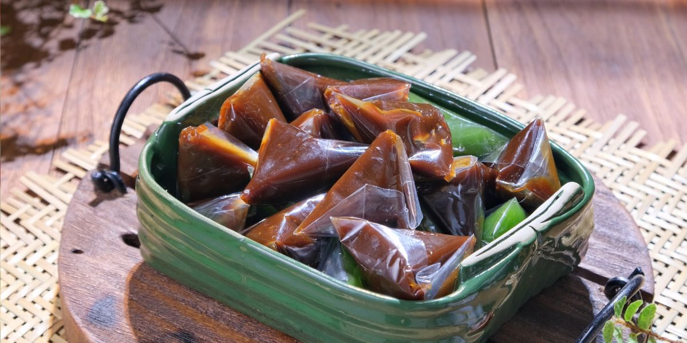
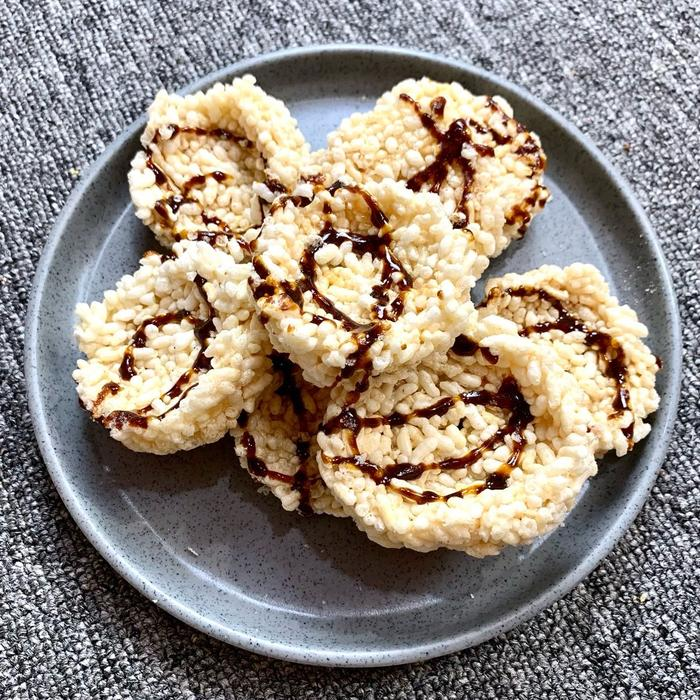

Ngalau Indah
Kawasan bukit dan gua kapur di Pakan Sinayan. Ngalau dikenal dengan formasi stalaktit dan stalagmit serta panorama kota dari area ketinggian.
Payakumbuh Barat · Kota Payakumbuh Foto: Dokumentasi lokalDari aliran Batang Agam hingga rasa rendang yang kaya rempah, jelajahi kota yang menyimpan keindahan alam, jejak sejarah, budaya, dan keramahan Minangkabau.
Terletak di dataran tinggi Sumatera Barat, Payakumbuh tumbuh sebagai kota perdagangan, pendidikan, dan persinggahan yang dekat dengan kehidupan masyarakat Minangkabau. Suasana kota, kawasan sungai, tradisi, serta kulinernya membentuk pengalaman yang khas.
Payakumbuh juga dikenal dengan julukan City of Randang. Namun, cerita kota ini tidak berhenti pada makanan. Ada ruang publik yang hidup, warisan sejarah, kampung budaya, dan alam di wilayah sekitarnya yang layak dikenal.

Setiap tempat punya karakter dan cerita sendiri. Keterangan lokasi di bawah membedakan destinasi yang berada di dalam Kota Payakumbuh dan yang berada di Kabupaten Lima Puluh Kota.

Kawasan bukit dan gua kapur di Pakan Sinayan. Ngalau dikenal dengan formasi stalaktit dan stalagmit serta panorama kota dari area ketinggian.
Payakumbuh Barat · Kota Payakumbuh Foto: Dokumentasi lokal
Kawasan tepian sungai yang dikembangkan sebagai ruang publik dan area aktivitas warga. Batang Agam juga terhubung dengan kisah sejarah kota.
Kota Payakumbuh Foto: Mery Nurfa Dilla · Wikimedia Commons, CC BY-SA 4.0
Jembatan bersejarah di atas Batang Agam. Kisah penamaannya berkaitan dengan cerita perjuangan dan kesedihan para ibu pada masa kolonial.
Kota Payakumbuh Rujukan: Dinas Pariwisata Kota Payakumbuh
Lembah dengan tebing-tebing batu yang menjulang, hamparan hijau, dan air terjun. Tempat ini menjadi salah satu lanskap alam paling dikenal di Luak Limopuluah.
Kabupaten Lima Puluh Kota Foto: Syurida · Wikimedia Commons, CC BY-SA 4.0
Kawasan perairan dan persawahan dengan suasana pedesaan. Rakit bambu dan pantulan perbukitan menjadi ciri visual kawasan ini.
Nagari Taram · Kabupaten Lima Puluh Kota Foto: Sikaka04 · Wikimedia Commons, CC BY 4.0
Jembatan layang dan ruas jalan berkelok yang membentang di antara perbukitan Bukit Barisan. Salah satu ikon perjalanan di Sumatera Barat.
Kabupaten Lima Puluh Kota Foto: DahliaDahlia Putri · Wikimedia Commons, CC BY-SA 4.0
Payakumbuh berada dalam lingkungan budaya Minangkabau. Adat, musyawarah, seni pertunjukan, dan tradisi nagari menjadi bagian dari kehidupan masyarakat yang terus berkembang.
Payakumbuh dikenal dengan ragam olahan rendang dan kudapan tradisional. Foto yang ditampilkan diberi keterangan sumber agar tidak menimbulkan kesan bahwa semua foto dibuat di Payakumbuh.

Olahan daging yang dimasak perlahan bersama santan dan racikan rempah hingga bumbu meresap. Rendang menjadi salah satu identitas kuliner yang menguatkan julukan Payakumbuh sebagai City of Randang.
Foto contoh rendang Minangkabau · bukan dokumentasi produsen lokal
Foto: Midori · Wikimedia Commons, CC BY 3.0
Kudapan manis menyerupai dodol, dibuat dari tepung ketan, santan, dan gula. Proses memasaknya membutuhkan pengadukan lama hingga adonan mengental dan bertekstur kenyal.
Foto Galamai Gegek · diambil di Batusangkar, bukan Payakumbuh
Foto: Adhmi · Wikimedia Commons, CC BY-SA 4.0
Kudapan berbahan beras ketan yang dibentuk pipih, dikeringkan, lalu digoreng hingga renyah. Batiah dikenal sebagai salah satu oleh-oleh khas Payakumbuh.
Foto Batiah khas Payakumbuh
Foto: Aldhiusy · Wikimedia Commons, CC BY-SA 4.0Jelajahi dengan rasa ingin tahu, hormati budaya setempat, dan dukung masyarakat serta pelaku usaha lokal dalam setiap perjalanan.
Kembali ke atas ↑Informasi destinasi: Jadesta — Desa Wisata Ngalau Indah, Jadesta — Taman Batang Agam, Sisparnas — Jembatan Ratapan Ibu. Informasi budaya dan pariwisata: Dinas Pariwisata Kota Payakumbuh. Informasi kuliner: RRI — Batiah khas Payakumbuh. Foto berasal dari Wikimedia Commons dengan lisensi dan kredit yang dicantumkan pada setiap kartu. Foto Jembatan Ratapan Ibu sengaja belum ditampilkan karena belum ditemukan dokumentasi berlisensi terbuka yang dapat dipastikan.